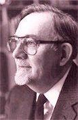

Jaroslav J. Vajda (b.
Lorain, Ohio, 1919; d. 2008)

Born of Czechoslovakian
parents, Vajda was educated at Concordia College in Fort Wayne, Indiana, and
Concordia Theological Seminary in St. Louis, Missouri. Ordained as a
Lutheran pastor in 1944, he served congregations in Pennsylvania and Indiana
until 1963. He was editor of the periodicals The Lutheran
Beacon (1959-1963) and This Day (1963-1971)
and book editor and developer for Concordia Publishing House in St. Louis
from 1971 until his retirement in 1986. Working mainly with hymn texts,
Vajda served on several Lutheran commissions of worship. A writer of
original poetry since his teens, he was the author of They
Followed the King (1965) and Follow
the King (1977). His translations from Slovak include Bloody
Sonnets (1950), Slovak Christmas (1960), An
Anthology of Slovak Literature (1977), and contributions
to the Lutheran Worship Supplement (1969)
and the Lutheran Book of Worship (1978).
A collection of his hymn texts, carols, and hymn translations was issued as Now
the Joyful Celebration (1987); its sequel is So
Much to Sing About (1991). Vajda's hymns are included in
many modern hymnals, and he was honored as a Fellow of the Hymn Society in
the United States and Canada in 1988.
Bert Polma
Carl F. Schalk (b.
Des Plaines, IL, 1929)

is professor of music
emeritus at Concordia University, River Forest, Illinois, where he taught
church music since 1965. He completed graduate work at the Eastman School
of Music in Rochester, New York, and at Concordia Seminary, St. Louis,
Missouri. From 1952 to 1956 he taught and directed music at Zion Lutheran
Church in Wausau, Wisconsin, and from 1958 to 1965 served as director of
music for the International Lutheran Hour. Honored as a Fellow of the Hymn
Society in the United States and Canada in 1992, Schalk was editor of the
Church Music journal (1966-1980), a member of the committee that prepared
the Lutheran Book of Worship (1978),
and a widely published composer of church music. Included in his
publications are The Roots of Hymnody in The Lutheran
Church-Missouri Synod (1965), Key
Words in Church Music (1978), and Luther
on Music: Paradigms of Praise (1988). His numerous hymn
tunes and carols are collected in the Carl Schalk Hymnary (1989)
and its 1991 Supplement.
Bert Polman
 ◎陳琇玟（台灣基督長老教會總會教會音樂委員會主委）
父親節快到了，我們除了藉此機會感謝地上的父親，是不是也再一次思想天上的阿爸，並致上稱謝與讚美。新聖詩23首〈雀鳥的主、海翁的主〉（英文曲名God of
the sparrow，註1），便是一首相當應景的詩歌，原文歌詞運用平易近人的英文，卻蘊涵深刻、有力的寓意，甚至畫成了精彩的繪本《GOD of the
Sparrow》。
〈雀鳥的主、海翁的主〉作於1983年，作詞者華積達牧師（Jaroslav J.
Vajda，1919∼2008）生於美國中北部俄亥俄州的路德會牧師家庭，是中歐內陸國斯洛伐克的後裔。斯洛伐克西北臨捷克、北臨波蘭、東臨烏克蘭、南臨匈牙利、西南臨奧地利，地理風光明媚，國民熱愛音樂藝術，這幾年台北愛樂舉辦的國際合唱音樂節，斯洛伐克合唱團的演唱總是贏得滿堂彩。華積達牧師18歲開始嘗試寫詩，聖詩作品超過200首，全世界有65本詩集收錄其聖詩作品。
作曲者是夏爾克教授（Carl F.
Schalk，b.1929），先後畢業於芝加哥協同神學院、紐約州伊士曼音樂學院，是1978年路德會禮拜手冊（Lutheran Book of
Worship）編輯，以寫作多首聖詩曲調、合唱作品、編輯教會音樂雜誌Church
Music聞名。夏爾克是美加聖詩協會榮譽會員，長期和華積達牧師搭檔寫作聖詩，他50多首聖詩作品收錄於多部宗派聖詩集。
這首詩歌讓我們仔細用眼觀看、用心默想創造的奇妙，不論環境友善與否，我們無從選擇，唯有面對創造一切的造物主。身為上帝的兒女，我們如何表達驚嘆、愛心、信心與難過？歌詞中用了很多問號，提醒我們在尋找問題的答案之前，先來回應上帝。 
歌詞賞析
我們來看英文歌詞（台語譯詞並列），從中認識上帝的屬性，也欣賞詩的韻腳（斜體字）。
1. God of the sparrow, God of the whale, God of the swirling stars.
How does the creature say Awe? How does the creature say Praise?
雀鳥的主、海翁的主，轉踅星辰的主，
阮著怎樣來敬畏，阮著怎樣來謳咾。
麻雀上天，鯨魚下海，星星代表無垠的宇宙，詩人用例子擴張我們想像的空間，讓我們不知不覺從心裡湧出讚嘆，上帝的作為何等奇妙！此節讓人聯想到另一首瑞典詩歌〈?真偉大〉，兩者有異曲同工之妙。
馬太福音6章26節說：「你們看那天上的飛鳥，也不種，也不收，也不積蓄在倉裡，你們的天父尚且養活他。你們不比飛鳥貴重得多麼？」上帝不只養活身長僅3吋的小麻雀，祂也養活體長達30公尺長的藍鯨！而滿天繁星各自按著軌道運行，都有上帝掌理。
2. God of the earthquake, God of the storm, God of the trumpet blast. 
How does the creature cry Woe? How does the creature cry Save?   
地動的主、暴風的主，?歕哨角的主，
阮著怎樣閃災難，阮著怎樣來呼救。
上帝的大能可以顯在地動天搖的地震時、顯在狂風暴雨裡，也可以顯在號角響起的榮耀降臨中。
有罪而不完全的受造者，一方面驚惶失措地哭喊：「慘了，我有禍了！」一方面卻又不禁迫切的祈求上帝拯救。
3. God of the rainbow, God of the cross, God of the empty grave.
How does the creature say Grace? How does the creature say Thanks?  
彩虹的主、十架的主，互墓變空的主，
阮著怎樣受恩典，阮著怎樣來感謝。
彩虹是上帝不再用水毀滅世界的立約記號，十架是救贖的記號，空墳得勝死亡帶來新生命。
4. God of the hungry, God of the sick, God of the prodigal.
How does the creature say Care? How does the creature say Life?
枵餓的主、病痛的主，憐憫浪子的主，
阮著怎樣求眷顧，阮著怎樣得活命。
上帝是饑寒、貧病之人與浪子的主，是我們生命的糧，我們的需要祂都知道，當我們流浪離開主，祂就像浪子的父親，每天等候、呼喚我們回家，等著將家中上好的產業，白白賜給我們。
5. God of the neighbor, God of the foe, God of the pruning hook. 
How does the creature say Love? How does the creature say Peace?
厝邊的主、對敵的主，用鐮修整的主，
阮著怎樣顯仁愛，阮著怎樣求和平。
不管周圍的環境對我們是友善或敵對，背後都有上帝的愛與管教，讓萬事互相效力，使愛上帝的人得益處。上帝的愛與平安，訴說不完！
6. God of the ages, God near at hand, God of the loving heart.
How do your children say Joy? How do your children say Home?    
萬世的主、身邊的主，慈悲憐憫的主，
阮著怎樣顯喜樂，怎樣實現?天國。
（最後2句，華語詩集《普天頌讚》譯為：「兒女蒙恩得喜樂．如何述說神是家？」）
上帝既是歷史的主（God of the ages），也是隨時隨在的主（God near at
hand），在每天生活舉止間、在Agape的愛中，上帝與我們同在。摩西帶領以色列人在曠野流浪40年，雖然上帝應許有一日要帶他們進入迦南地，以色列人仍不免有「何處是兒家」的嘆息，然而摩西在詩篇90篇中說：「主啊，?世世代代作我們的居所。諸山未曾生出，地與世界?未曾造成，從亙古到永遠，?是上帝。」摩西雖然眼睛尚未看見，透過信心的眼光，他相信上帝的應許必要實現，以上帝做心靈的居所，摩西的心並未四處漂泊。這一節，也讓人聯想到聖詩〈上帝做阮代代幫助〉。
旋律解析
「雀鳥的主」6節歌詞，前5節都停在半終止屬和絃（音階第5音的和絃，參考註2譜例），第6節最後一個字Home（台譯「天國」）終於停在完全終止主和絃（音階第1音的和絃），好像回到本家有安全感。當主旋律停在第5音，高聲部助旋律停在第3音（註3譜例）時，則讓人有尚未結束的感覺，一切似乎還在繼續進行。這讓我想到身為父母，跟著孩子的成長腳步，學習經歷不同年齡層，當稍微上手時，孩子又已經邁入下一個階段&hellip&hellip。
我們個人的家庭，教會（眾人組成的大家庭），無法讓所有人都滿意，以人來看永遠有進步空間，應該要更好。但上帝的兒女在信心的眼睛中，靠著禱告、宣告上帝是我家之主，相信上帝必要保守，讓家人間彼此關係更親近，更認識上帝，家成為家，吟唱者若能從和聲變化體會作曲者的音樂神學，將會心微笑。
註
1. 可連結至此欣賞：youtu.be/SSbB153VSoo
2. 譜例最後和絃音是sol-si-re，sol是C大調的第5音，又稱屬音，建立在屬音上面的和絃為屬和絃，樂句停在屬和絃稱為半終止。3.
譜例最後和絃音是do-mi-sol，do是C大調的第1音，又稱主音，建立在主音上面的和絃為主和絃，樂句停在主和絃稱為完全終止，但旋律音未停在do音（主音），所以又有點尚未真正回到家的感覺。
https://tcnn.org.tw/archives/12407
"God of the Sparrow"
Jaroslav J. Vajda
The United Methodist Hymnal, No. 122
Jaroslav Vajda (b. 1919) is one of the leading hymn writers in the 20th
century and arguably the preeminent living Lutheran hymn writer.
Mr. Vajda (pronounced vaheeduh) was born in Lorain, Ohio, the son of a
Lutheran pastor of Slovak descent. Thoroughly Lutheran, he was educated at
Concordia College and Concordia Seminary and pastored several bilingual
parishes (German and English) in Pennsylvania and Indiana. Jary (as his
friends call him) has served as the editor of several Lutheran magazines and
retired as a book editor from Concordia Publishing House.
He began translating classical Slovak poetry at the age of 18 and his work
was published in the U.S. and Europe. Mr. Vajda wrote his first hymn at age
49, followed by more than 200 original and translated hymns, which now
appear worldwide in more than 65 hymnals, translations and articles.
He served on the hymnal committee for The
Lutheran Book of Worship (1978), one of the most important
later 20th century hymnals. Elected a Fellow of The Hymn Society in the
United States and Canada in 1988, Mr. Vajda has received numerous honorary
doctorates validating his contributions to hymn singing.
“God of the sparrow God of the whale” is one of the most popular new hymns
in The
United Methodist Hymnal (1989). His motivation was the
result of a commission from Concordia Lutheran Church in Kirkwood, Mo., “to
compose a hymn text that would provide answers from the users of the hymn as
to why and how God’s creatures (and children) are to serve him. The Law of
God demands perfect love from every creature; the love of God and the Gospel
coax a willing response to live as an expression of gratitude.”
A noticeable feature of this hymn is its lack of punctuation and rhyme. To
the singer this creates a sense of openness—a text that is not bound by the
conventional patterns of poetry. Each of the six stanzas is perfectly
balanced: the first two lines of each stanza offer a glimpse into the
actions of God in the world and the bond God has with God’s creatures. The
last two lines of each stanza ask two rhetorical questions: “How does the
creature... ” The lack of a question mark gives one the sense that these
questions are not so much expecting an answer as making a statement of
profound wonder about the relationship between the Creator and the Creator’s
creatures.
The first two stanzas focus on God as manifest in the natural world. The
third stanza links the Creator with the Incarnation—“God of the cross God of
the empty grave.” Stanzas four and five draw upon biblical images of
relationship with God’s children: “God of the hungry God of the sick God of
the prodigal,” “God of the neighbor God of the foe.” The final stanza is the
“God of the loving heart” whose children can only respond by saying “Home.”
Carl Schalk (b. 1929), a leading Lutheran organist and composer, recognized
the poem’s potential as a hymn. The relationship between Mr. Vajda and Mr.
Schalk has been one of the most enduring poet/musician teams of the 20th
century. As the author noted, “Carl Schalk’s collaboration with me on this
hymn and others prompts an expression of appreciation to him and to all
musicians, without whom... hymn texts, no matter how good, would die.”
Mr. Schalk’s tune ROEDER, the maiden name of the composer’s spouse, was
composed for this text and was originally included in Hymnal
Supplement II (1987) and first sung in July 1987 at an
annual meeting of the Hymn Society in the U.S. and Canada in Fort Worth,
Texas.
Mr. Vajda’s hymns are available in a recent comprehensive collection, Sing
Peace, Sing Gift of Peace (2003), published by Concordia
Publishing House.
Dr. Hawn directs the sacred music program at Perkins School of Theology.
From Wikipedia, the free encyclopedia
Jump to navigationJump
to search
Jaroslav Vajda (April
28, 1919 – May 10, 2008) was an American hymnist.
Vajda was born to a Lutheran pastor
of Slovak descent
in Lorain,
Ohio, where his father, Rev. John Vajda, was a pastor.[1] Vajda's
father served parishes in Emporia,
Virginia, Racine,
Wisconsin, and finally, from 1926 until his retirement, in East
Chicago, Indiana at
Holy Trinity Slovak Lutheran Church. Vajda's father and mother (Mary
Gecy) were both originally from Hazleton,
Pennsylvania. Jaroslav had two brothers, Ludovit and Edward,
both pastors, now deceased. Vajda himself pastored parishes in Cranesville,
Pennsylvania (1945–1949), Alexandria,
Indiana (1949–1953), Tarentum,
Pennsylvania (1953–1963), and St.
Louis Missouri (1963–1976).
Vajda received musical training in
childhood and began translating classical Slovak poetry at age 15,
when three delegates from the cultural institute of Slovakia visited
his father's home and left a box of books of Slovak
literature. Vajda did not write his first hymn until
age 49. From that time until his death in 2008 at age 89, he wrote
over 200 original and translated hymns that appear worldwide in more
than 65 hymnals.
He also published two collections of hymn texts, numerous books,
translations, and articles. Vajda served on hymnal commissions for Hymnal
Supplement (1969) and Lutheran
Book of Worship (1978). In recognition of his
significant contributions to the world of Christian hymnody, Vajda
was named a Fellow of The Hymn Society in the United States and
Canada. He also received an honorary doctorate degree from his alma
mater, Concordia
Seminary, in 2007.[2]
Vajda was a Fellow of the Hymn
Society in the United States and Canada, and was the recipient
of numerous honorary doctorates recognizing hymnal contributions.
After 18 years in a mostly bilingual ministry, he became the editor
of This Day Magazine and then
became a book editor and developer at Concordia
Publishing House. He retired in 1986.